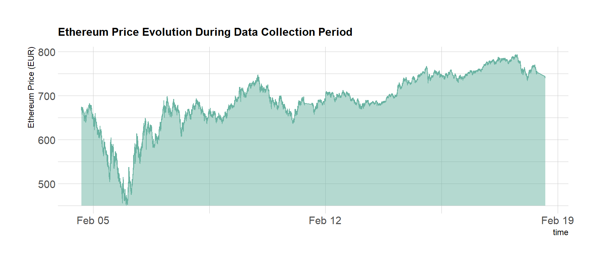

Cryptocurrency Price Data Collection
Comprehensive Market Data Harvesting: 800,000+ Data Points Across 5 Exchanges
Cryptocurrency markets operate through specialized trading platforms called exchanges, which function as digital marketplaces for buying and selling digital assets. Unlike traditional financial institutions, these exchanges operate 24/7 with prices fluctuating continuously based on real-time supply and demand dynamics, often updating every few seconds.
Modern cryptocurrency exchanges provide public APIs (Application Programming Interfaces) that enable programmatic access to real-time market data. For instance, to retrieve the current Bitcoin price from the Kraken exchange, you can access the following endpoint directly in your browser:
https://api.kraken.com/0/public/Ticker?pair=BTCEUR
This API call returns comprehensive market data including three critical price points:
last: The price of the most recent
completed transactionbid: The highest price buyers are
willing to pay (sell price for holders)ask: The lowest price sellers are
willing to accept (buy price for purchasers)The real power of public APIs lies in their ability to be accessed programmatically, enabling automated data collection at scale. This capability is essential for systematic market analysis and algorithmic trading strategies.
Below is a practical example using the R programming language to retrieve Bitcoin market data from Kraken and format it into a structured table:
# Load required packages
library(tidyverse)
# Establish connection and retrieve market data
library(RCurl)
api_endpoint <- "https://api.kraken.com/0/public/Ticker?pair=BTCEUR"
raw_data <- getURLContent(api_endpoint)
# Parse JSON response and structure data
require(jsonlite)
parsed_data <- fromJSON(raw_data)$result[[1]]
market_data <- data.frame(
ask = parsed_data$a[1],
bid = parsed_data$b[1],
last = parsed_data$c[1],
open = parsed_data$o,
low = parsed_data$l[1],
high = parsed_data$h[1],
volume = parsed_data$v[1],
volumeQuote = NA,
timestamp = NA
)
# Display results| ask | bid | last | open | low | high | volume |
|---|---|---|---|---|---|---|
| 95764 | 95764 | 95764 | 96137 | 94375 | 96209 | 38 |
To facilitate systematic data collection across multiple exchanges, I have developed a comprehensive function library that standardizes API interactions across five major cryptocurrency exchanges. This library provides unified access to market data regardless of the underlying exchange’s API structure.
Usage Example:
This research project involved an extensive data collection campaign with the following specifications:
The data harvesting was implemented using an automated collection system that continuously called the API functions described above. The complete implementation script is available here.
Data Access: The complete dataset is publicly available on GitHub in compressed format. You can load and analyze the data using the following R code:
# Load the comprehensive market dataset
load("../DATA/public_ticker_harvest.Rdata")
# Examine the dataset structure
head(Ticker)Data Visualization Preview: As a demonstration of the dataset’s richness, here’s the Ethereum price evolution on Bitstamp during the collection period:
# Load the comprehensive dataset
load("../DATA/public_ticker_harvest.Rdata")
# Create price evolution visualization
library(hrbrthemes)
Ticker %>%
filter( symbol == "ETHEUR" ) %>%
filter(platform == "Bitstamp") %>%
ggplot( aes(x=time, y=as.numeric(last))) +
geom_ribbon(aes(ymin=450, ymax=as.numeric(last)), fill="#69b3a2", color="transparent", alpha=0.5) +
geom_line(color="#69b3a2") +
ggtitle("Ethereum Price Evolution During Data Collection Period") +
ylab("Ethereum Price (EUR)") +
theme_ipsum() +
theme(
plot.title = element_text(size=12)
)
With this comprehensive dataset in hand, the next phase involves quantitative analysis of price differences between exchanges. If these differences prove significant enough, they may present viable arbitrage opportunities.